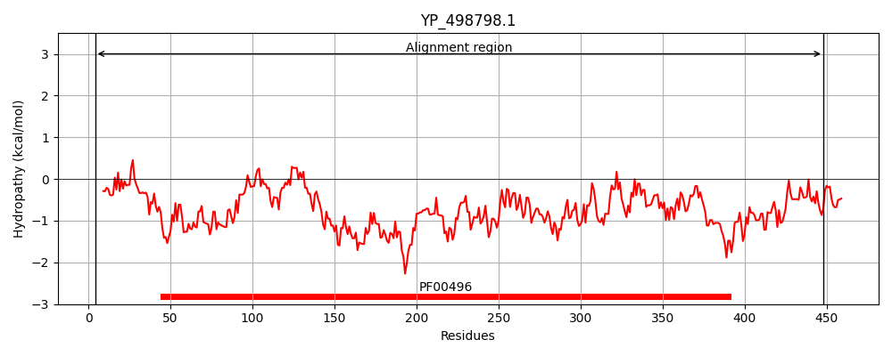
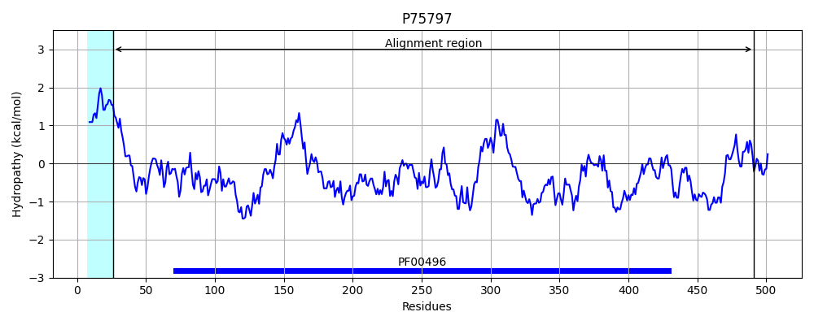
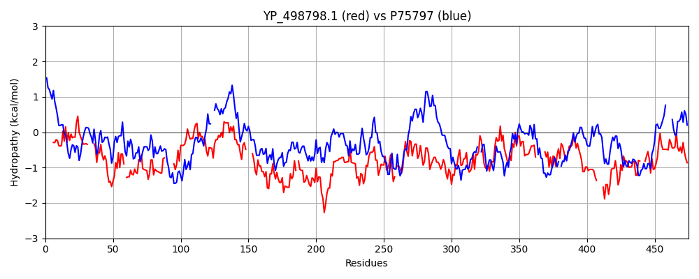

Hit Accession: P75797
Hit TCID: 3.A.1.5.11
Hit Description: gnl|BL_ORD_ID|11410 gnl|TC-DB|P75797|3.A.1.5.11 Putative binding protein yliB precursor - Escherichia coli.
Mach Len: 475
e:0.000000
Query TMS Count : 0
Hit TMS Count: 1
TMS-Overlap Score: 0.000000
Predicted Substrates:CHEBI:5437;glutathione
BLAST Alignment:
Score: 336 , Bit scores: 134 bits, E-value: 3.3e-34, Alignment length: 475, Percentage identity: 25
Query: 4 SGKDLNISLPLKTKSIAPYETDVPVKIGAAES----LFKTNDQGKIEKALVKSYHQPND-TTLDIELKDNIKFQNGQKLTAEKVKSSLE------NSMKKSDLVKYSLPISSITAKGQKLTIKTNSAYPELVSELANPFMAIYDTDAKS----DVNQTPVGTGPYQIKDYKQSRKISLSNFKDYWQ-GKPKLDHITVTYQEDGNNRVRNLESQKDDLITDVPVNKVQDIENNQNLKVSKESGFRTSLLMYNHTNKKMTK-SVREALDHIIDRQGIADHIYQGYAKPATSPFNDKIPYIKEPKLTKQNIEQAKMLLAKDGYTKEHPLKIKLITYDGRPELSKIAQVLQSDAKKANIEIDIKSVD------DIEGYLKDRSAWDATMYSFGTIPRGDTGYFFNQAYKKDG----AINKGDYNNSNVDDLINQLNHTVDVKER---HNISNDIIKLSSRDVPNSYIAYNDQIVAANSK 448
+ KD+ +++ ++ PY+ + + A+S LF + + K++ L +SY +D T ++L++ IKFQ+G A VK++L+ N +K+ +L K +I K+T+K + ++ LA+P A+ A ++ PVGTGPY++ + Q+ + + F YWQ G PKLD IT D N R L++ + +P + +E N+N+++ + N T K VREAL++ I+R + + GYA PAT I Y + K + +A+ LL + GY + L + K+ Q Q + I+ + ++D ++EG + S Y+ + G+ + + + N Y+N VDD + Q T D E+ + + DII S +P +++V+A+SK
Sbjct: 26 AAKDVVVAVGSNFTTLDPYDANDTLSQAVAKSFYQGLFGLDKEMKLKNVLAESYTVSDDGITYTVKLREGIKFQDGTDFNAAAVKANLDRASDPANHLKRYNLYKNIAKTEAIDPTTVKITLK--QPFSAFINILAHPATAMISPAALEKYGKEIGFYPVGTGPYELDTWNQTDFVKVKKFAGYWQPGLPKLDSITWRPVADNNTRAAMLQTGEAQFAFPIPYEQATLLEKNKNIELMASPSIMQRYISMNVTQKPFDNPKVREALNYAINRPALVKVAFAGYATPATGVVPPSIAYAQSYKPWPYDPVKARELLKEAGY--PNGFSTTLWSSHNHSTAQKVLQFTQQQLAQVGIKAQVTAMDAGQRAAEVEGKGQKESG-VRMFYTGWSASTGEADWALSPLFASQNWPPTLFNTAFYSNKQVDDFLAQALKTNDPAEKTRLYKAAQDIIWQESPWIP----LVVEKLVSAHSK 491 | Protein Hydropathy Plots: |
|---|
|  |  |
Pairwise Alignment-Hydropathy Plot:
|
|---|
|  |